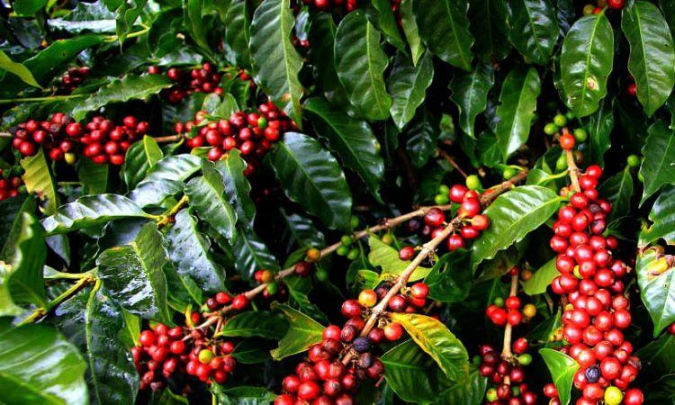

Coffee
Best Coffee Planting Practices: While you can't germinate the coffee beans you buy in a store, you can sprout the ones that grow on your coffee plant. Called "cherries," the fruit should be picked when they're a bright crimson color. This is how you'll know they're ready to sow. Rub away their flesh and wash away any residue to release the seeds or beans. Dry them thoroughly by sitting in the open air for a few weeks. Soak the beans in water for 24 hours (toss any that float), and sow in damp, but well-draining, sand. Water daily, and the beans should germinate in two to four months. When they've germinated, carefully remove them and plant each one in well-draining, acidic soil. Water twice a week.
Best Fertilizers for Coffee Farms:The coffee plant’s need for zinc, iron, copper, sulfur, manganese, boron, magnesium, sodium and chlorine, is something to keep in mind. It is a micronutrient-hungry plant, and these micronutrients can provide the plant with just the correct nourishment for its optimum growth. When selecting a fertilizer with these micronutrients, make sure to go for the ones that have a healthy NPK level. NPK indicates the macronutrient content of the fertilizer, which are Nitrogen (N), Phosphorus (P), and Potassium (K). Nitrogen too is an essential component.
Pest management for Coffee: The Leucoptera coffeella Guer is a small insect that is a significant pest of coffee plants. It is a tiny, light-colored moth with large antennas. It is native to South America and is found in coffee-growing regions worldwide. The female moth lays its eggs on the undersides of coffee leaves. After about a week, the larvae hatch and burrow into the leaves to feed for about 3 weeks. This feeding causes damage to the leaf tissue, resulting in visible brown spots or “mines” that can reduce the foliage and photosynthetic ability of the coffee tree if found in large numbers. The population of coffee leaf miners reaches its peak during the summer but decreases significantly during the rainy season. Control: Using agroforestry practices that will maintain the temperature in your plantation. High temperatures might allow it to proliferate. Chemical control is again the most effective solution, but it should only be used when they are found in high numbers.
Harvesting and Storage for Coffee: The time between blooming and maturing of the fruit varies appreciably with the variety and the climate; for Arabica it is about seven months and for Robusta about nine months. The ripened fruits of the coffee plant are known as coffee cherries, and each cherry generally contains two coffee seeds (“beans”) positioned flat against one another. About 5 percent of cherries contain only one seed; called peaberries, those single seeds are smaller and denser and produce, in the opinion of some, a sweeter, more flavourful coffee. The fruit is gathered by hand when it is fully ripe and red-purple in colour.